Experience

PayPal
Software Engineer
San Jose, CA | 08/2025 - Present
Walmart Global Tech
Software Engineer
Hoboken, NJ | 09/2024 - 08/2025
About Me
Passionate about AI and machine learning — especially agentic workflows, LLM tooling, and building things that actually work at scale. I enjoy exploring the intersection of AI and real-world systems, from distributed backends to computer graphics and AR/VR.
Outside of work I build side projects — an MCP package manager, a Path of Exile AI assistant, game bots, image generation tools, and more. If it involves AI or interesting engineering challenges, I'm probably already tinkering with it.
What I Know
My Projects

LLM Router
An intelligent routing layer that dispatches prompts to the most suitable LLM based on task type, cost, and latency constraints — enabling optimal model selection across providers at runtime.
mcp-get
The package manager for MCP servers — install and configure servers for Claude Desktop, Cursor, Windsurf, and VS Code in one command. No more manually editing JSON config files.
PoeMCP
An MCP server that gives any LLM access to Path of Exile game data — gems, unique items, passive tree nodes, live pricing, and Path of Building build parsing. Data fetched at runtime from poedb.tw, poe.ninja, and poewiki.net.
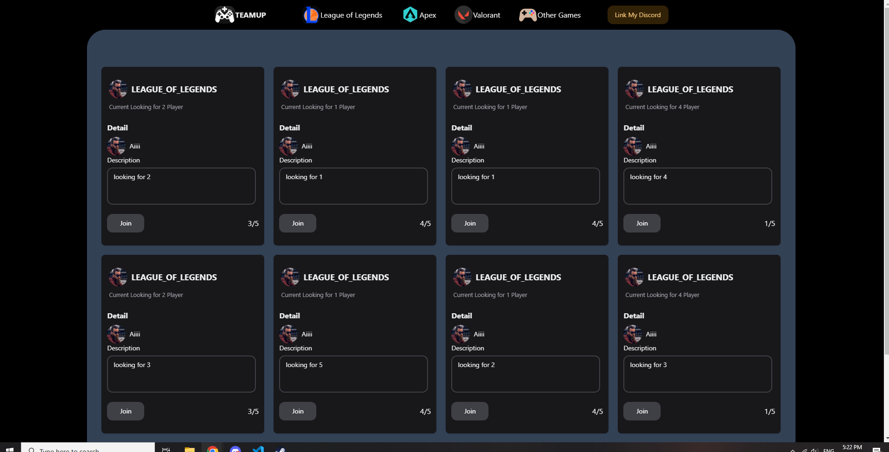
TeamMeUp (Under develop)
TEAMMEUP is a sleek full-stack web app for gamers to create and find game matches. It uses Python Flask and MongoDB for the backend, and ReactJS for a responsive frontend.
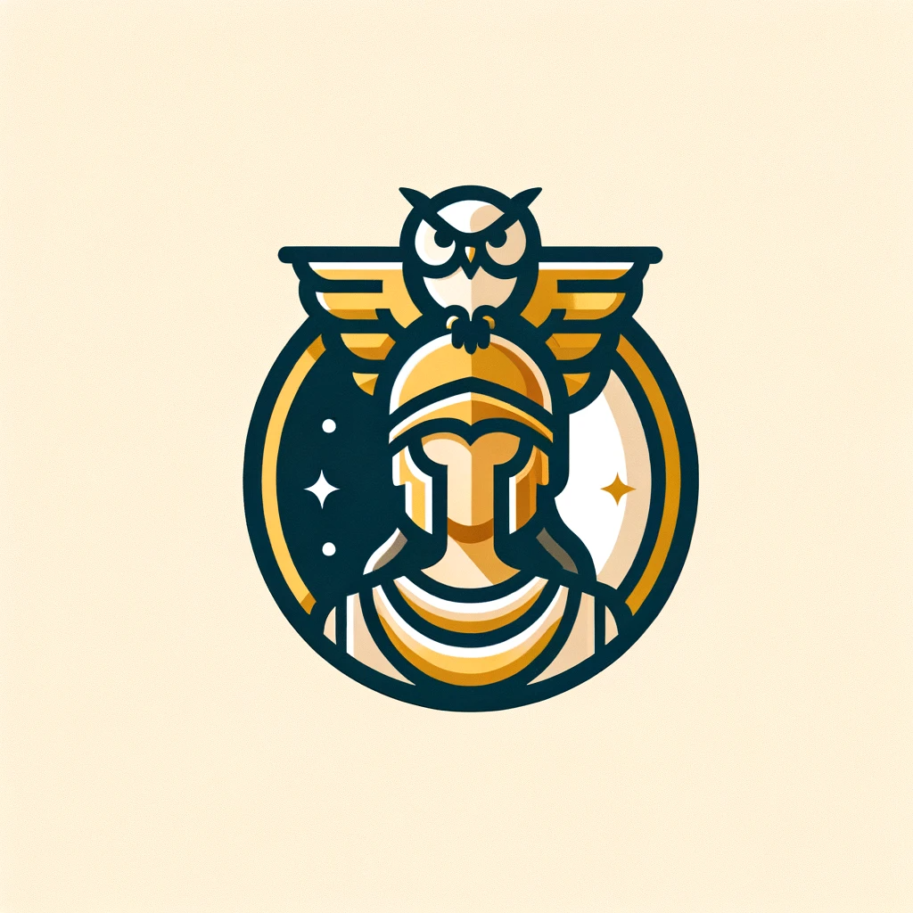
ATHENA
ATHENA, an AI Interview Practice Bot designed to prepare aspiring data analysts for job interviews in this highly competitive field. It offers a dynamic and personalized approach to mastering the art of interviews.
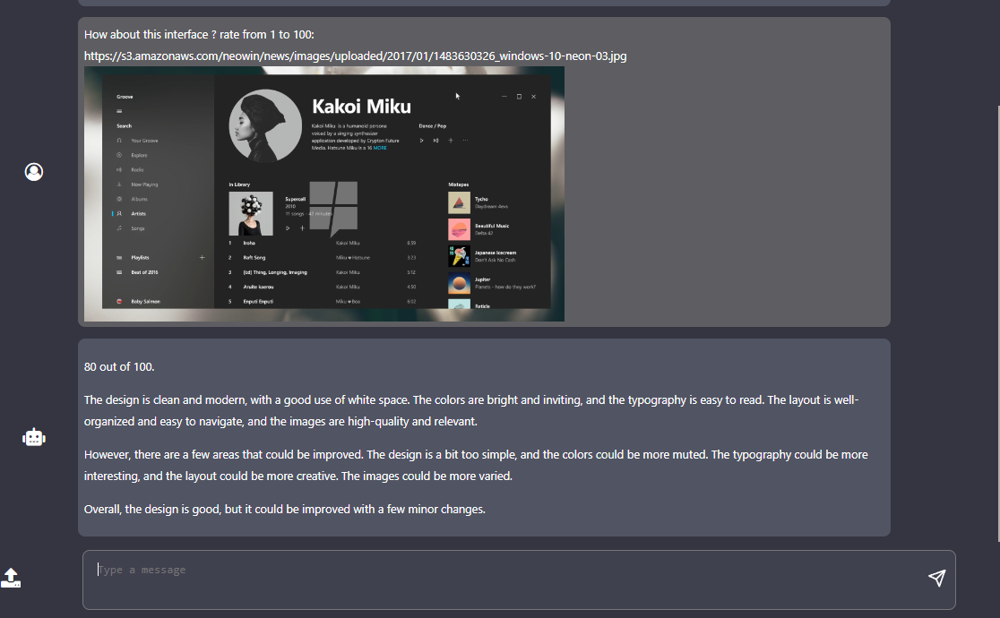
VertexAIVision
This project is a web application using Python Flask as the backend and HTML, CSS, and JavaScript for the frontend. It integrates with Google Cloud's Vertex AI services through three different API calls( REST format). \ The goal of the project is to help the chatbot understand the image and give feed back according to image.
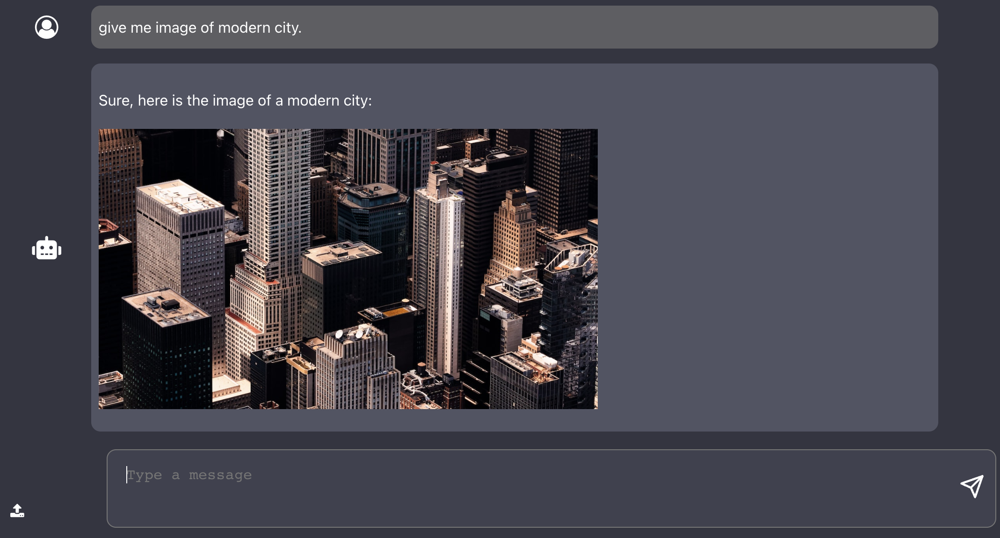
AI-ChatVision
This project combines ChatGPT with the Stable Diffusion Image Model to enable users to have conversational interactions with ChatGPT and receive AI-generated images as responses.
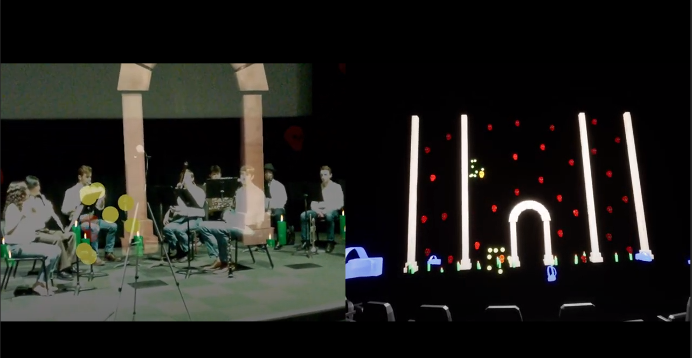
AR/VR Immersive Music Show
This project offers a captivating AR/VR experience for music concerts across various platforms, transporting users to dynamic virtual stages with synchronized music to revolutionize the concert experience.
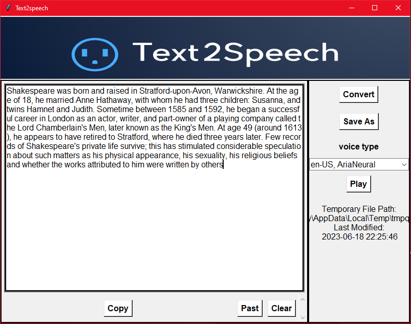
Text2Speech
Text2Speech is a Windows application built with Python, Tinkers, and Edge-TTS that can convert text into audio speech. It allows users to generate spoken output from written input.
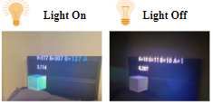
LightAR
"LightAR" enhances augmented reality with real-world lighting adaptation, using Unreal Engine 4, C++, Magic Leap, and Hollence tech. Detecting and blending virtual objects seamlessly with ambient lighting, it elevates AR immersion and interaction.
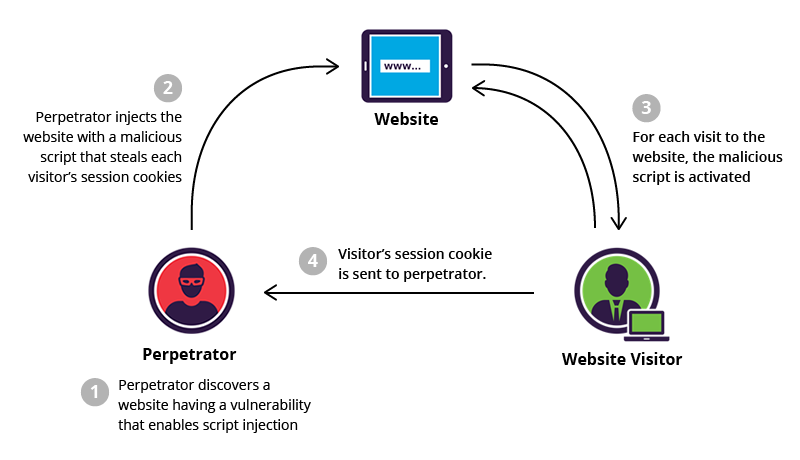
ML XSS attack detection
This project uses a neural network with TensorFlow and Keras to predict XSS attacks. It features a sequential model with Conv2D and Dense layers, using Python and key libraries like Numpy and Pandas.
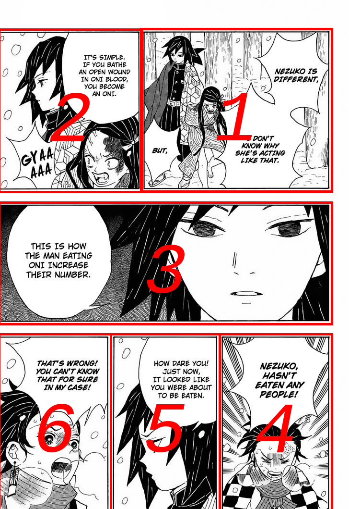
Manga Scene Extractor
The "Manga Scene Extractor" is a Python solution that simplifies manga scene extraction while also capturing text within each scene, including dialogues, captions, and textual content. This tool operates within the Google Colab environment, making it accessible for manga enthusiasts, researchers, and content creators looking to efficiently analyze and extract manga content in an organized manner.
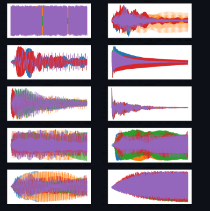
Music Note Classification
This project utilizes recurrent neural networks (RNNs) to classify audio samples from the NSynth dataset. It aims to develop an accurate system for identifying musical instruments and sound properties.
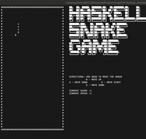
Haskell Multiplayer Snake Game
The project aimed to develop a terminal-based snake game with multiple game states (start, run, and end), enabling players to control the snake's movement, collide with borders, and grow by eating food.
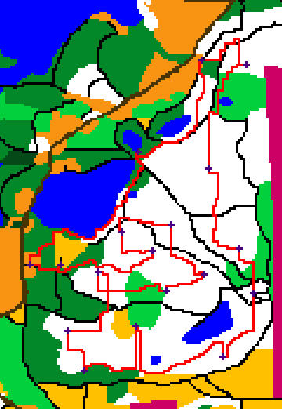
Optimal Path Finder
This project utilized terrain and elevation maps to find optimal paths using the A* algorithm. It involved analyzing map data to create a node graph and then applying A* to determine the most efficient path, considering terrain and elevation.
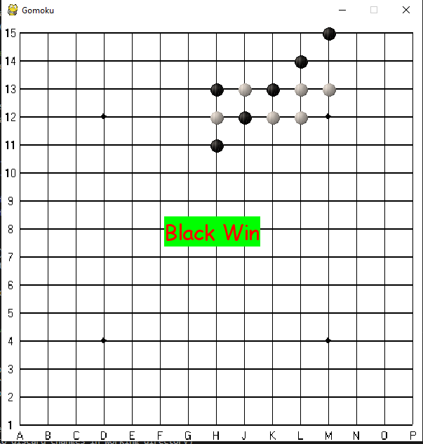
Gomoku-AI
This project utilizes Pygame for developing the base Gomoku game and implements a basic Gomoku AI using the minimax algorithm.
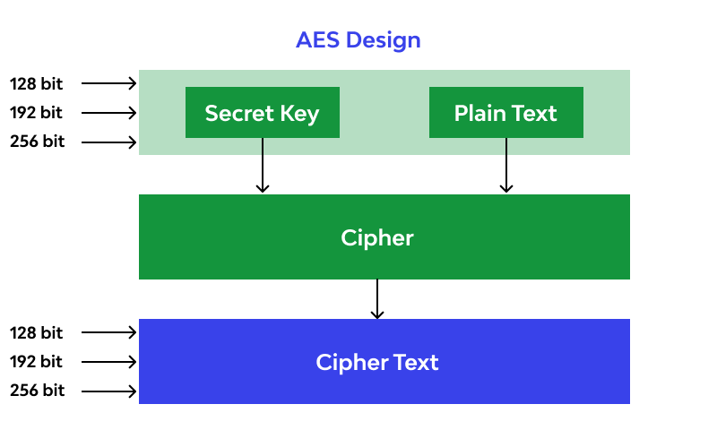
AES Encryption
This project offers a robust implementation of the Advanced Encryption Standard (AES) algorithm in C++, providing a secure and efficient solution for encrypting and decrypting sensitive data.